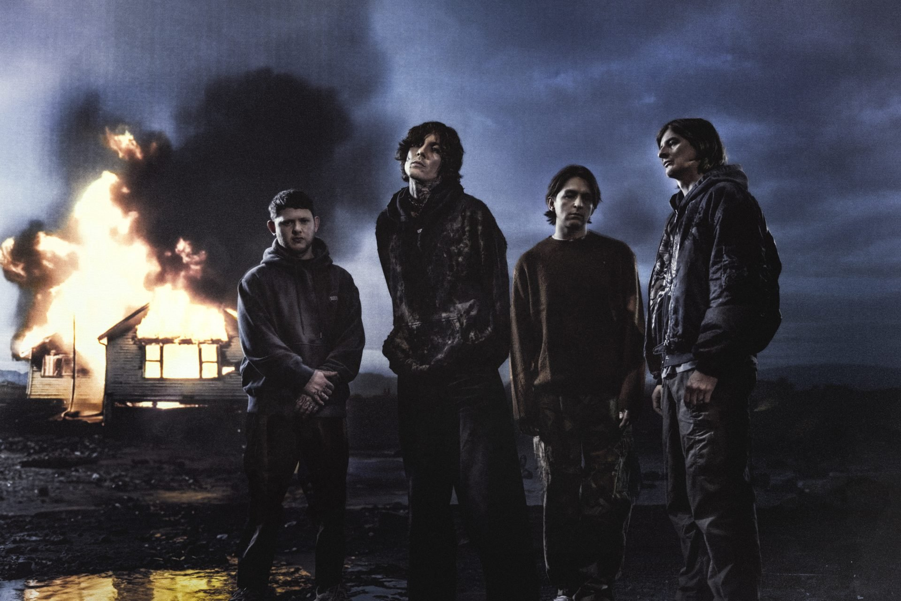

Bring Me the Horizon
Bring Me the Horizon (BMTH) is a highly influential British rock band formed in Sheffield in 2004, known for evolving from deathcore to a unique mix of alternative metal, pop-rock, and electronic music. Led by vocalist Oli Sykes, the band has become one of the biggest in modern rock, selling over 7 million albums globally.
Discography
- Count Your Blessings (2006) - Deathcore
- Suicide Season (2008) - Metalcore
- There Is a Hell... (2010) - Metalcore / Electronic
- Sempiternal (2013) - Metalcore / Post-Hardcore
- That's the Spirit (2015) - Alternative Rock / Pop Rock
- Amo (2019) - Pop Rock / Electronica
- POST HUMAN: SURVIVAL HORROR (2020) - Alternative Metal
- POST HUMAN: NeX GEn (2024) - Post-Hardcore / Hyperpop
Learn more on Wikipedia.